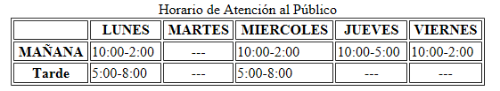
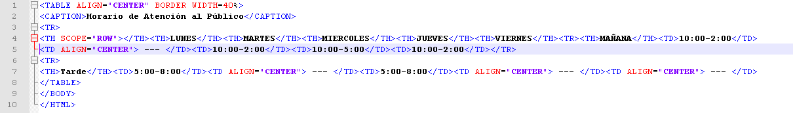

HTML es el lenguaje con el que se define el contenido de las páginas web. Básicamente se trata de un conjunto de etiquetas que sirven para definir el texto y otros elementos que compondrán una página web, como imágenes, listas, vídeos, etc.
El HTML se creo en un principio con objetivos divulgativos de información con texto y algunas imagenes. No se pensó que llegara a ser utilizado para crear área de ocio y consulta con carácter multimedia (lo que es actualmente la web), de modo que, el HTML se creó sin dar respuesta a todos los posibles usos que se le iba a dar y a todos los colectivos de gente que lo utilizarían en un futuro. Sin embargo, pese a esta deficiente planificación, si que se han ido incorporando modificaciones con el tiempo, estos son los estándares del HTML. Numerosos estándares se han presentado ya. El HTML 4.01 es el último estándar a febrero de 2001. Actualización a mayo de 2005, en estos momentos está apunto de presentarse la versión 5 de HTML, de la que ya se tiene un borrador casi definitivo.
El HTML es un lenguaje de marcación de elementos para la creación de documentos hipertexto, muy facil de aprender, lo que permite que cualquier persona, aunque no haya programado en la vida, pueda enfrentarse a la tarea de crear una web. HTML es fácil y pronto podremos dominar el lenguaje. Más adelante se conseguirán los resultados profesionales gracias a nuestras capacidades para el diseño y nuestra vena artista, así como a la incorporación de otros lenguajes para definir el formato con el que se tienen que presentar las webs, como CSS.
Una vez conocemos el concepto de HTML os vamos a adelantar algunas cosas más. Este lenguaje se escribe en un documento de texto, por eso necesitamos un editor de textos para escribir una página web. Así pues, el archivo donde está contenido el código HTML es un archivo de texto, con una peculiaridad, que tiene extensión .html o .htm (es indiferente cuál utilizar).El lenguaje consta de etiquetas que tienen esta forma "B" o "P". Cada etiqueta significa una cosa, por ejemplo "B" significa que se escriba en negrita (bold) o "P" significa un párrafo, "A" es un enlace, etc. Casi todas las etiquetas tienen su correspondiente etiqueta de cierre, que indica que a partir de ese punto no debe de afectar la etiqueta, algunas etiquetas constan de palabras claves que difieren de la función de la misma, ayudando a mejorar el uso de la etiqueta; estas palabras claves se llaman atributos, los cuales veremos más a fondo dentro de esta lección.
Los atributos son la forma que tienen los autores de definir propiedades para un elemento. Estas propiedades habitualmente cambian la forma en que los navegadores interpretan al elemento, al cambiar su significado o presentación. Por ejemplo, el elemento a inserta un vínculo en el documento, pero el atributo rel indica la relación entre el documento actual (el que contiene al vínculo) y el recurso de destino (al cual el vínculo está apuntando).
Muchos de los atributos en HTML5, aquellos conocidos como atributos globales, están disponibles para todos los elementos del estándar. Pero la mayoría de los elementos tienen además un conjunto de atributos específicos que solo están disponibles o específicamente adaptados para ellos.
Como ya hemos visto en ejemplos previos, los atributos son declarados indicando su nombre, seguido de un signo igual ("=") y el valor asignado entre comillas. Pero algunos atributos, que solo pueden tomar valores booleanos (verdadero o falso), aplican su valor tan sólo con su presencia. En estos casos, los atributos pueden ser declarados con sólo indicar su nombre.
Ahora veremos como es la sintaxis de estos:

Una tabla no es otra cosa más que un medio de organizar datos en filas y columnas. Este concepto ha estado presente en nuestra sociedad por un largo período de tiempo y ha sido adoptado por HTML en sus etapas iniciales, como una forma de transmitir información que, de otro modo, no sería comprendida tan fácilmente.
En documentos HTML una tabla puede ser considerada, resumidamente, como un grupo de filas donde cada una contiene a un grupo de celdas. Esto es conceptualmente distinto a un grupo de columnas que contiene a un grupo de filas, y esta diferencia tendrá un impacto en la composición y comportamiento de la tabla.
Como muchas otras estructuras de HTML, las tablas son construidas utilizando elementos. En particular, una tabla básica puede ser declarada usando tres elementos, a saber, table (el contenedor principal), tr (representando a las filas contenedoras de las celdas) y td (representando a las celdas).
Ahora veremos un ejemplo de tabla tn HTML. Tomando en cuenta que en el ayuntamiento hay horarios en los que se atienden diferentes cuestiones con la ciudadania, se necesita crear una tabla que muestre dichos horarios:
Así sería el código:
